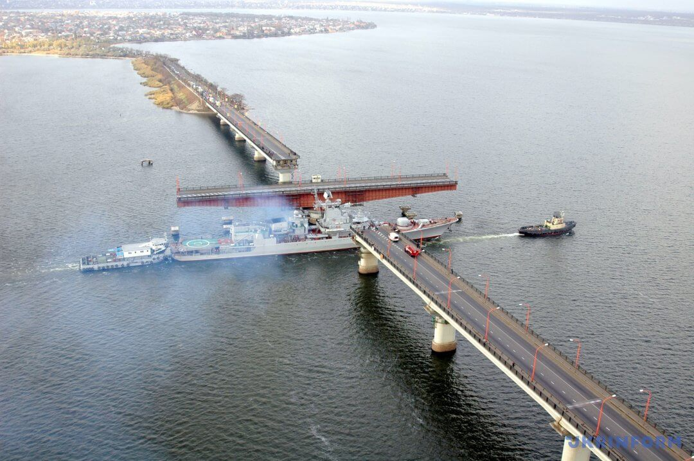
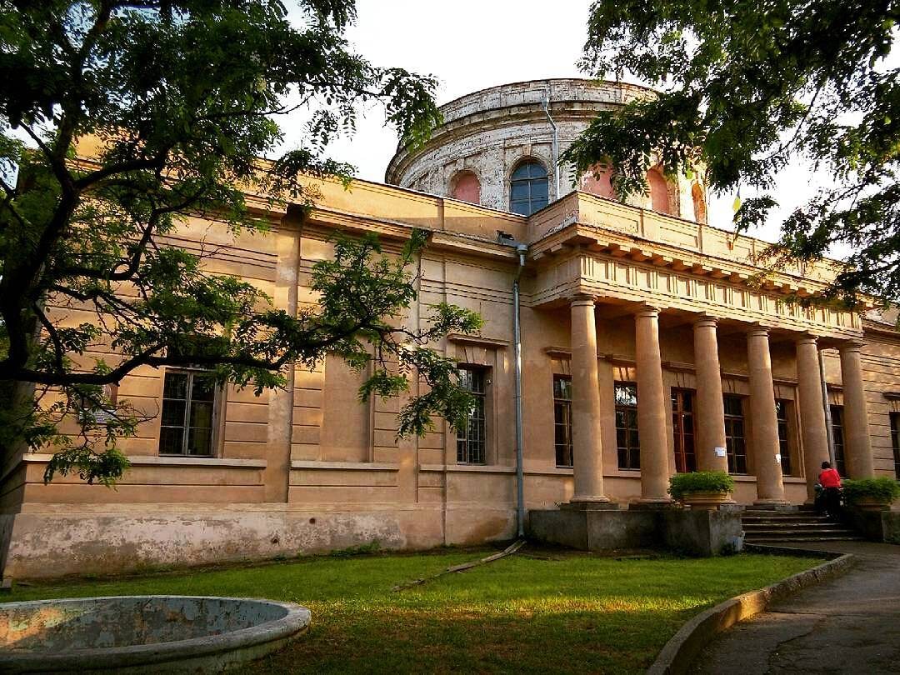
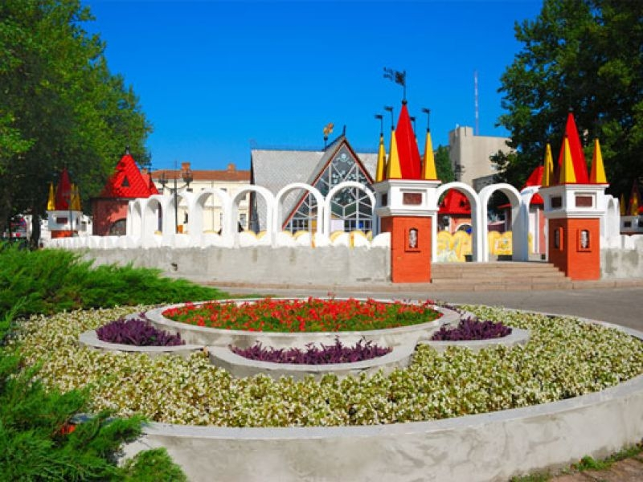
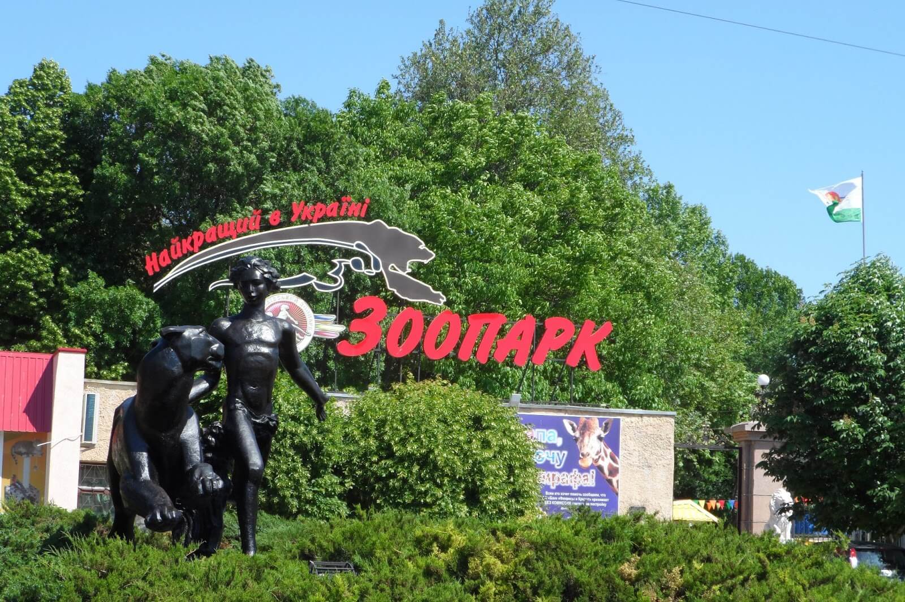
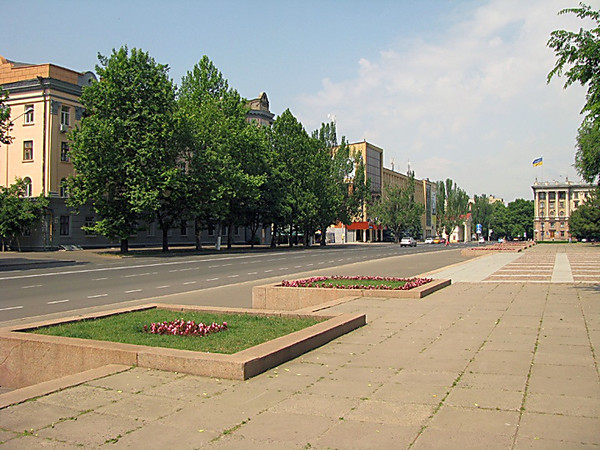
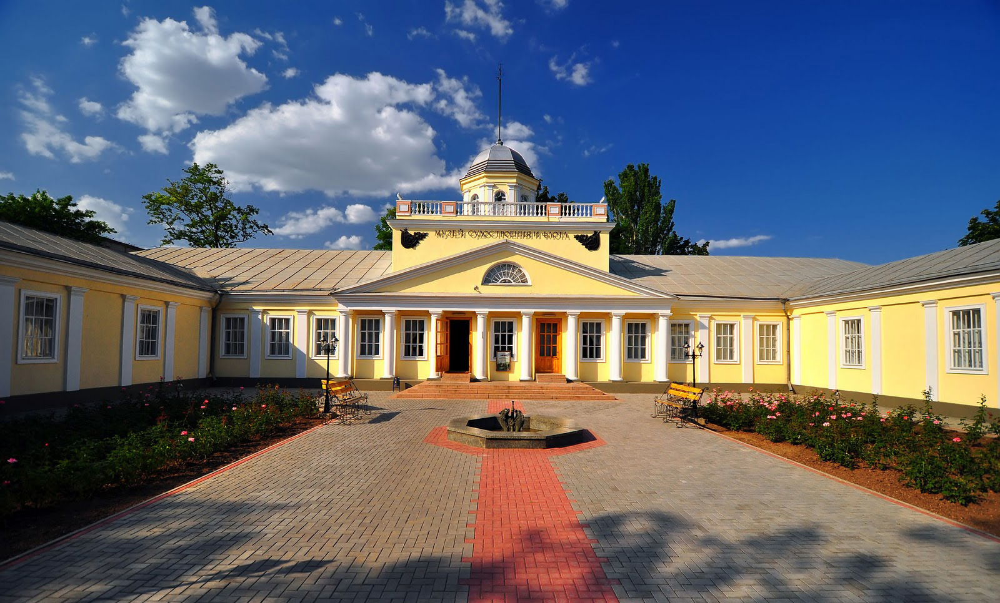

Коли говоримо про Київ, уява одразу ж малює схили Дніпра, ансамбль Києво-Печерської Лаври, пам’ятник засновникам міста, Львів – Високий замок, вид на міські дахи з Ратуші, «Криївку», Одеса – Потьомкінські сходи, Ланжерон, Оперний театр, Ужгород – Набережна, пішохідний міст, замок… Коли згадуєш про Миколаїв, мало у кого складається яскрава картинка. Будемо це виправляти.
Для початку давайте трохи історії і фактів.
Місто назване на честь Святого Миколая – покровителя моряків. Саме в День Миколи війська російської імперії завоювали турецьку фортецю Очаків у 1788 році. Наступного року на Інгулі почали зводити місто, яке вирішили назвати на честь шанованого християнського святого.
Миколаїв – місто кораблів
Перший збудований тут фрегат називався не інакше як «Святий Микола».
Миколаїв має декілька власних рекордів. Тут є Інгульський міст – сьогодні він вже реконструйований та сучасний. Це перший міст в Миколаєві, що розташувався на злитті річок Інгул та Південний Буг. Міст розвідний, а його підйомна частина – найбільша в Європі.
Варварівський міст, що з’явився наступним, був збудований на місці переправи. Сьогодні це єдиний в Україні міст, розведення якого виконується горизонтально з поворотом на 90 градусів.
А ще тут знаходиться найдовша пішохідна вулиця в Україні. Це вулиця Радянська, що веде до набережної. Старі будинки тут поєднуються з новими. Тут – велика кількість кафе та магазинів. В кінці вулиці – Каплиця Святого Миколая. Раніше на її місці стояв собор, закладений самим Потьомкіним. Його ім’я згадаємо ще не раз, поки будемо говорити про місто кораблів.
Миколаїв має власні катакомби.
Вже в кінці XVIII століття в місті почали активно відкриватися навчальні заклади – Чорноморське штурманське училище, чоловічі та жіночі гімназії. Не дивно, що у Миколаєві – багато освічених людей та справжніх фахівців своєї справи.
У 1821 році в місті відкрилася обсерваторія. Вчені, що працювали тут, зробили навіть власне відкриття. Малу планету Сонячної системи під номером 8141 відкрили саме вони! Над назвою, звичайно ж, довго думати не довелося. Тепер десь в космосі навкруг Сонця крутиться ще один Миколаїв.
Одна із найстаріших обсерваторій Східної Європи, заснована у 1821 році, спочатку була морською. Працівники складали морехідні карти, вчили штурманів орієнтуватися на морі за допомогою зірок, складати зоряні карти та визначати координати небесних планет і комет.
Це одна із найкрасивіших будівель Миколаєва, що була внесена до попереднього списку пам’яток світової спадщини ЮНЕСКО. Вона розташувалася на вершині Спаського кургану. Це не лише найвище місце Миколаєва, а й історична територія. Колись тут було поселення прадавніх народів епохи ранньої бронзи. Сьогодні ж це – найстаріша наукова установа в Україні, що розміщується в тому ж приміщенні та продовжує свою діяльність від першого дня існування.
Миколаївська обсерваторія має власний меридіан в міжнародних астрономічних атласах. Тут є музей, де зберігається колекція астрономічних приладів, годинників, книг, фотографій та карт.
Дитяче містечко «Казка»
Український «Діснейленд» – мрія кожної дитини. Атракціони, розваги морозиво. Море відпочинку та позитивних емоцій. Фігурки казкових персонажів біля казкових будиночків.
Ви й самі зможете відчути себе безтурботною дитиною. У святкові дні тут проходять справжнісінькі турніри середньовічних лицарів, а ще – вистави та концерти. Навіть клумби тут казкові, з незвичайними рослинами. Містечко з фортецями, кораблями, паровозами, фонтанами та автодромом уже більше 30 років гостинно приймає нових відвідувачів.
Кожна споруда – це окремий сюжет. І всі ці сюжети сплітаються у справжнісіньку казку в центрі Миколаєва.
Зоопарк
Здавалося б, навіщо їхати в інше місто, щоб відвідати там зоопарк…
- А якщо він – один із найкращих в Європі?
- А якщо він входить до світової асоціації зоопарків та акваріумів?
Можливо, не кожен знає, що це за асоціація, але вже сам факт вражає. Із 8 тисяч існуючих зоопарків до асоціації входять всього 254 із них.
Спочатку це був акваріум-музей із вільним доступом. Поступово він виріс до закладу, що став домівкою для більш ніж п’яти з половиною тисяч тварин 460 видів. Майже половина із них занесені до Червоної Книги. Зоопарк займає почесне третє місце за різноманітністю видів у Європі (після Неапольського та Монакського).
В Миколаївському зоопарку живе найстаріша тварина усіх зоологічних парків України – 65-річний крокодил на ім’я Вася. Зоопарк має власний гімн, прапор, емблему, ювілейну монету та поштову марку. За рік його відвідують понад 300 тисяч людей.
Адміральська вулиця
Перша і головна вулиця Миколаєва ще з 1789 року. Саме тут розташований будинок, де проживали головнокомандуючі Чорноморського флоту.
Саме тут базувалося Чорноморське адміралтейство. Саме тут знаходяться Старофлотські казарми. Вулиця починається біля Морського зібрання, що згодом стало будинком офіцерів флоту.
Музей суднобудування та флоту
Візитна картка Миколаєва. Єдиний музей подібної тематики в Україні.
Будинок, де розмістився заклад, був помешканням та канцелярією головнокомандуючих Чорноморського флоту в ХІХ столітті. У 12 залах розмістилися близько 3 тисячі експонатів. Відвідувачі починають свій тур від часів Київської Русі.
Документи, фотографії, нагороди та особисті речі моряків розповідають про їх походи та подвиги, допомагають простежити, як розвивалось судноплавство та суднобудування. Близько 100 моделей кораблів, останки суден, знайдені на дні Чорного моря та південних річок, стародавні карти, навігаційні пристрої, унікальні документи, колекція зброї.
Все це можна знайти на вул. Адміральській, 4, щодня (крім останнього понеділка місяця) з 9 до 17 години.
Старофлотські казарми
Де б ще міг розміститися Миколаївський музей, як не в колишніх казармах для матросів?
Архітектурний ансамбль Старофлотських казарм – це три однакові будинки зі скромними фасадами розташовані у формі літери «П». Тут могли розміститися до 2 тисяч матросів, а комплекс мав стати навіть втричі більшим. В різні часи тут розташовувалися чоловіча гімназія, будівельний технікум, ремонтні бригади. Сьогодні місце стало домівкою для 170 тисяч експонатів.
В межах 21 залу створені підходящі умови для їх зберігання. Завітайте на вул. Набережну, 29 та переконайтеся самі.